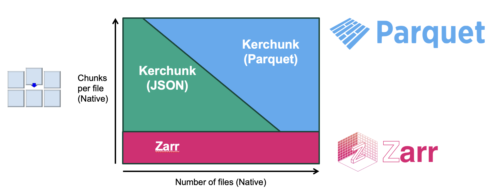
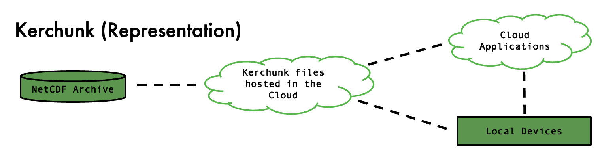
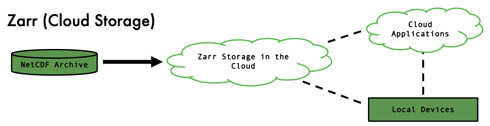

DataPoint’s Cloud Product Handler
The DataPointCloudProduct class
For any users wanting to take advantage of the functionality within datapoint to configure and open datasets via STAC records, this operator is the object to use.
The DataPointCloudProduct operator can be instantiated for each conformant asset from one or more items. For a single item:
from ceda_datapoint.core.cloud import DataPointCloudProduct
from ceda_datapoint.core.item import identify_cloud_type
products = []
for name, asset in item.assets.items():
cf = identify_cloud_type(id, asset)
if cf is None:
continue
products.append(
DataPointCloudProduct(
asset, # The asset obtained from pystac.Item
id=name, # ID of the asset (can be combined with the item ID)
cf=cf, # Cloud format identified above.
meta={'bbox':bounding_box}, # See below.
properties=properties # Properties of the parent item.
)
)
In this example, item is a pystac object that can be obtained from the pystac-client or a similar pystac implementation.
The cloud format/type (see below) can be identifier using the function identify_cloud_type also imported from DataPoint.
This relies on either the id of the asset conforming to the labels that DataPoint expects (i.e reference_file) or the asset containing
a property called cloud_format. If the asset contains a the cloud format but under a different name, the cflabel can be adjusted accordingly.
If the cloud label is nested within the asset, a mapper can be supplied (see the section on Mappers).
We can then initialise a DataPointCloudProduct for this asset. There are additional kwargs that can be supplied but the important ones are highlighted above.
For the meta argument, a dictionary must be given which (at minimum) includes the bounding box (which is not typically part of the Item’s properties).
Other attributes of the item that apply to the asset can be passed using this mechanism. STAC properties (like STAC version) can be passed using the
stac_attrs kwarg if necessary.
DataPointCluster objects
In the above example, a list of cloud products is generated for convenience. Instead, we could combine these into a cluster object which comes with some benefits
over just using a list:
String representation with metadata
Able to obtain a listing of metadata in each cloud product.
Help/Info methods available.
Able to open a dataset directly from the cluster.
Indexable, so can extract a product by ID or position.
Cloud Formats
From recent user surveys relating to the Climate Model Intercomparison Project (CMIP6) datasets available via the CEDA Archive, some common issues and barriers to research relate to how to find and access the data itself.
Research is typically undertaken by either connecting to JASMIN using remote SSH to access data, or downloading entire datasets to local institutions for data analysis. The download process can take weeks for some datasets, and not all institutions are able to provide remote JASMIN access. To give data users alternative ways of accessing data without requiring large downloads of data, cloud-accessible methods of data aggregation must be explored.
Cloud optimisation typically involves breaking up the existing data structure into easy-to-manage data chunks
which can then be requested individually, so if a user would like to utilise only a specific subset of data,
they only need to access the relevant parts. The chunk structure therefore directly affects performance, and
special consideration must be given to the size and shapes of chunks diven the end use-case. For example, if all
users are likely to look at regions no smaller than a single country, your chunk sizes should be at least as small,
if not smaller. If the chunk structure is much larger than the area of interest, the user is forced to download a large
set of data, only to discard most of it to then access their small area.
There are generally two approaches with allowing individual chunk access to data: - reformat: break them up into separate objects that can be individually requested. - reference: provide a mechanism to get a specific byte range corresponding to that chunk from a larger object.
The most common formats for utilising these methods (for raster data) are Zarr and Kerchunk respectively.
The above diagram demonstrates when is appropriate to use both optimisation methods. Since the reference method does not involve changing the original chunk structure, it is best to use when there is a high level of chunking already present, which can easily be mapped. There are two competing formats to store the references, both used by Kerchunk, depending on how many references your dataset will produce.
If the source files are not well chunked for the use case or have very few chunks in general, the best solution is reformatting to a format like Zarr, which will allow the chunk structure to be altered.
1. Kerchunk Reference format
Kerchunk was developed by Martin Durant at Anaconda as a Python library for cloud-friendly access to archival data by reference, an alternative to converting archival data into newer cloud-optimised formats. There are specific similarities in syntax between Kerchunk and Zarr as there is a significant overlap between the teams working on both. The key difference with Kerchunk is that the data is not converted or transformed, instead a kerchunk reference file is created which acts as an interface to archived NetCDF data. NetCDF files contain encoded data with embedded metadata, shown in Figure. Byte-range requests are supported but without opening the file first, the locations of data chunks are unknown. The Kerchunk process maps out all chunks within each file in a dataset and creates a list of chunk locations and sizes, producing a JSON file which can then be used to make range requests.
Since Kerchunk files can be opened using Xarray the chunks can be loaded when required rather than all at once, a process called Lazy Loading. This removes the requirement of downloading an entire NetCDF file to determine which parts of the data are required. In that way Kerchunk does part of the work of Zarr, but without the second step of physically moving the data into separate containers. Any Kerchunk user can use HTTP GET requests to retrieve specific byte-ranges of data served by NginX/Apache web-servers which are then combined into a single Xarray dataset object.
2. Zarr stores
One solution to the problems NetCDF presents in terms of cloud access issues, would be to migrate data to a more cloud-friendly format and upload this new format to a public cloud platform like Amazon S3 or GCP. These use an Object Store architecture in place of a traditional file system. In object storage, items are collected in a flat hierarchy of buckets, with bytes read and written within the buckets by http calls. There are several cloud-optimised file formats in development, with many organisations starting to implement new storages in these formats and enabling cloud access.
Both Cloud Optimised GeoTIFFs (COG) and Zarr Stores break up existing NetCDF data into chunks which enable HTTP requests for efficient dataset slicing and extraction of only the required data chunks. Kerchunk originated as a direct alternative to Zarr with many similarities.
Zarr is an open-source specification format for storing N-dimensional arrays that may be chunked and compressed. Chunks are stored in separate compressed files within a Zarr (object), along with separated metadata files (Zarray and Zattrs) as shown in Figure, which allows selection and usage of only specific parts of the data. This is useful for large datasets with multiple variables as only a handful of chunk files need to be accessed for a typical time-series slice of multiple variables, whereas doing the same with NetCDF would involve accessing many if not all the files and require downloading the full dataset or access to JASMIN.
The JSON-style metadata is stored alongside the binary chunk data in the bucket. Each chunk is named using the index position within the N-dimensional chunking regime of the Zarr data and is stored as an independent object, hence parallel reads of different Zarr chunks is supported. Data can be rechunked on conversion to Zarr to suit operational needs and typical use-cases.
3. Climate Forecast Aggregations (CFA)
CFA parameters are now included in the CF conventions (as of CF version 1.12),
and define how so-called aggregation variables should be defined within a CFA-netCDF file. A
CFA-netCDF file acts as a reference file to a set of Fragment files (which may be netCDF or other formats),
and an appropriate application reader (like cfapyx) is able to read and interpret the aggregated data into
the proper set of variables and dimensions that cover the extent of the set of Fragment files. Accessing a
subset of the data is then made more efficient as the application reader can fetch only the portions of the
array required by the user for any particular computation.